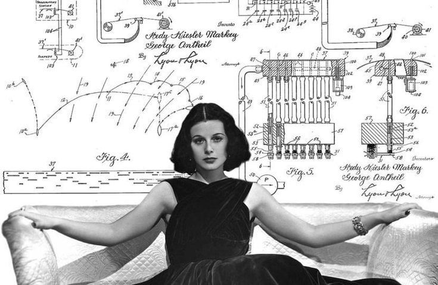

Ciência Delas

A 23ª edição da Semana Nacional de Ciência e Tecnologia (SNCT) será centrada no tema "Ciência Delas", que homenageia o protagonismo das mulheres na ciência, tecnologia e inovação. Este tema é uma oportunidade para ampliar a participação feminina na ciência, especialmente as mulheres negras, indígenas e quilombolas, que enfrentam desafios significativos em áreas estratégicas e de liderança.
A trajetória de Hedy Lamarr representa o protagonismo feminino na ciência e na tecnologia. Ao desenvolver, junto a George Antheil, uma proposta de comunicação por salto de frequência, ela contribuiu para pesquisas que influenciaram o campo das comunicações sem fio. Nesse contexto, o projeto “Frequências, Interferências e a Comunicação” conecta o tema "Ciência Delas" à valorização das mulheres na inovação científica, demonstrando, por meio de simulações interativas, como suas ideias se relacionam com os avanços tecnológicos e reforçando a importância da participação feminina na construção da ciência.